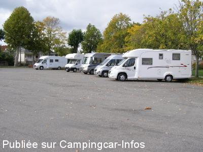

ASN = Aire de services avec stationnement nuit possible de :
JOSSELIN
(N° 489)
Accès/adresse :
Place Saint Martin
56120 JOSSELIN
56120 JOSSELIN
Latitude : (Nord) 47.95606° Décimaux ou 47° 57′ 21′′
Longitude : (Ouest) -2.54964° Décimaux ou -2° 32′ 58′′
Tarif : 2015
Stationnement gratuit
Eau : 2,05 €
Paiement par carte bancaire
Type de borne : AIRESERVICES
Services :


Tous commerces
Autres informations :
Ouvert toute l'année
100 grands emplacements
Tel : +33(0)297 222 417
http://www.josselin.com

Le 25/10/2015 par Tof
Le 25/10/2015 par Tof
Le 25/10/2015 par Tof
Le 10/10/2015 par King Pat
Le 28/08/2010 par McROY
Le 28/08/2010 par McROY
de
Tof
le 25/10/2015 :
Bonjour,
Grande place en bitume, accés facile, calme la nuit. Pas eu besoin des services. La ville est à découvrir, n'hésitez pas à monter au sommet de l'église ouvert au public pour decouvrir une vue sur l'ensemble.
Merci à la municipalité de nous accueillir.
Nuit du 18 au 19 octobre 2015.
Bonjour,
Grande place en bitume, accés facile, calme la nuit. Pas eu besoin des services. La ville est à découvrir, n'hésitez pas à monter au sommet de l'église ouvert au public pour decouvrir une vue sur l'ensemble.
Merci à la municipalité de nous accueillir.
Nuit du 18 au 19 octobre 2015.
de
King Pat
le 10/10/2015 :
de passage à Josselin le 22 février 2015
beau parking calme très proche du centre ville
belles ballade à pied dans le village et vers le chateau
la borne de service est bien faite
de passage à Josselin le 22 février 2015
beau parking calme très proche du centre ville
belles ballade à pied dans le village et vers le chateau
la borne de service est bien faite
de
titmary027
le 10/03/2015 :
Arrêt pour les services. Borne très bien aménagée et très propre.
Arrêt pour les services. Borne très bien aménagée et très propre.
de
joca44
le 09/06/2014 :
Le 31 mai:aire gratuite,propre,très bien placé pour visiter la ville.Prévoir de ne pas bouger le samedi matin car c'est saturé de voitures.Les gourmands qui laissent trop de place entre 2 CC auront le plaisir de voir les mamies manoeuvrer autour d'eux.OT trés sympa.
Le 31 mai:aire gratuite,propre,très bien placé pour visiter la ville.Prévoir de ne pas bouger le samedi matin car c'est saturé de voitures.Les gourmands qui laissent trop de place entre 2 CC auront le plaisir de voir les mamies manoeuvrer autour d'eux.OT trés sympa.
de
nathvero
le 02/05/2014 :
Beau parking et ville très agréable à visité
Beau parking et ville très agréable à visité
de
TITITE 35
le 20/09/2013 :
Un grand merci à la municipalité de permttre le stationnement des camping-cars sur cette grande place goudronnée
Effectivement le samedi matin c'est un chaud avec le marché mais c'est quand même trés bien placé
Un grand merci à la municipalité de permttre le stationnement des camping-cars sur cette grande place goudronnée
Effectivement le samedi matin c'est un chaud avec le marché mais c'est quand même trés bien placé
de
Géanne
le 08/05/2013 :
§
aire très bien située par rapport au centre ville.2,05€ les services uniquement par carte.
petite ville étape très agréable
ce parking est aussi accessible aux voitures.attention le marché a lieu le samedi matin et on a un peu de difficultés à en ressortir en fin de matinée car les voitures sont parfois stationnées n'importes comment
§
aire très bien située par rapport au centre ville.2,05€ les services uniquement par carte.
petite ville étape très agréable
ce parking est aussi accessible aux voitures.attention le marché a lieu le samedi matin et on a un peu de difficultés à en ressortir en fin de matinée car les voitures sont parfois stationnées n'importes comment
de
bil
le 31/05/2012 :
De passage en mai 2012 parking très bien situé pour la visite de Josselin (château) petite ville très agréable boulangerie à proximité.
Merci à la commune.
De passage en mai 2012 parking très bien situé pour la visite de Josselin (château) petite ville très agréable boulangerie à proximité.
Merci à la commune.
de
le 31/08/2011 :
Belle aire située 50M du château et du très beau centre ville ne pas oublier vos vélos nous sommes sur le canal de NANTES à BREST cela vaut le détour
Belle aire située 50M du château et du très beau centre ville ne pas oublier vos vélos nous sommes sur le canal de NANTES à BREST cela vaut le détour
de
McROY
le 13/08/2010 :
Nous avons dormis sur cette aire très calme où les services sont à 2,05€ réglement par carte bancaire. Attention le samedi matin a lieu le marché hebdomadaire de Josselin, le parking est vite saturé par les voitures, les grands camping-cars pourraient avoir des difficultés pour quitter les lieux. Je vous conseille donc de rester sur place et de profiter de ce grand marché. Cette aire se situe à 2mn du centre. Très belle bourgade qui vaut le détour. §
Nous avons dormis sur cette aire très calme où les services sont à 2,05€ réglement par carte bancaire. Attention le samedi matin a lieu le marché hebdomadaire de Josselin, le parking est vite saturé par les voitures, les grands camping-cars pourraient avoir des difficultés pour quitter les lieux. Je vous conseille donc de rester sur place et de profiter de ce grand marché. Cette aire se situe à 2mn du centre. Très belle bourgade qui vaut le détour. §
de
Stankiki
le 23/07/2010 :
Nous avons été charmés par cette petite ville de caractère. Château,vieilles demeures, calme ... La place Saint-Martin mise à disposition me parait suffisante, se situant à quelques minutes du centre. Etape à recommender.
Nous avons été charmés par cette petite ville de caractère. Château,vieilles demeures, calme ... La place Saint-Martin mise à disposition me parait suffisante, se situant à quelques minutes du centre. Etape à recommender.
de
THIPHINEAU
le 22/04/2010 :
Aire pas du tout indiquée et pas facile à trouver sur une place. Bref, rien d'extraordinaire. Par contre, possibilité de s'installer sur les bord du canal (hors saison) et ville à voir.
Aire pas du tout indiquée et pas facile à trouver sur une place. Bref, rien d'extraordinaire. Par contre, possibilité de s'installer sur les bord du canal (hors saison) et ville à voir.
de
cc80
le 14/03/2010 :
Nous avons passé la nuit avec 3 autres CC, je confirme le calme de cette aire. La ville mérite un petit détour.
Nous avons passé la nuit avec 3 autres CC, je confirme le calme de cette aire. La ville mérite un petit détour.